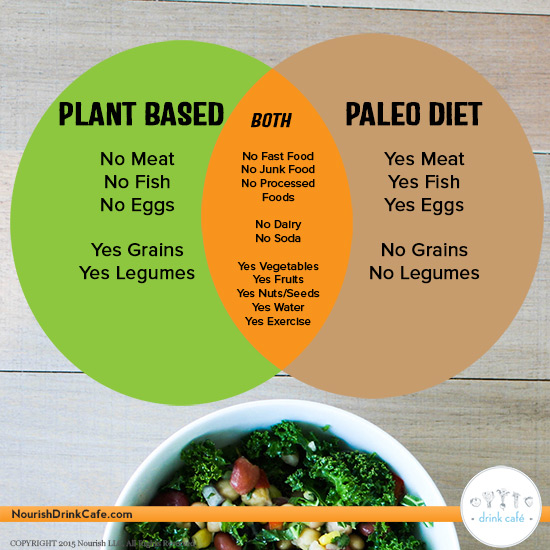

Nutrition now adays is a widely debated topic. It's almost as fascinating to study the differing view points more so than the view points themselves. Gone are the days where all we had to worry about was a gigantic food pyramid or food lables! Case in point, a lot of people simply avoid food that contain lables in the first place! One such group of people are the Paleo or Paleolithic eaters. This is not to be confused with Vegan eaters or Vegetarian eaters .
| Foods | Vegan | Vegitarian | Paleo |
|---|---|---|---|
| Fruits | yes | yes | yes |
| Fish | no | sometimes | yes |
| grains | yes | yes | no |
Paleo tends to be about the consumption of foods that were typically hunted or gathered back in the Paleolithic era of human existance. Here is a general listing of foods typically permitted in someone interested in eating a modern paleo diet.
Foods that are typically restricted in a modern paleo diet tend to include foods that don't grow naturally in the wild. As a result most grain based foods, even rice and corn are restricted in the diet. Any type of food that needs to be chemically synthesized, or go through even further processing tend to be restricted. Even meats that are from a factory based model farm tend to be avoided. The gamier the better. The argument being that prehistoric man was unable to do these things, and as a result the human body evolved for thousands of years best suited for the foods naturally occuring in nature. Paleo followers tend to believe that much of the diseases we see today stem from the unnatural foods we've been eating in modern history. Many foods that are restricted in a modern paleo diet include:
This site is pretty good at finding various recipes to help you stay motivated towards eating Paleo. I feel it's a bit busy and a little cluttered.
this line added from my phone